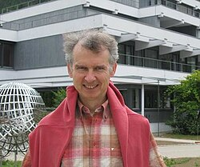

Jean-François Le Gall | |
|---|---|
 Le Gall in 2011 | |
| Born | 15 November 1959 (age 66) |
| Citizenship | French |
| Alma mater | Ecole normale supérieure Pierre and Marie Curie University |
| Awards | Rollo Davidson Prize (1986) Loève Prize (1997) Fermat Prize (2005) Sophie Germain Prize (2005) Wolf Prize in Mathematics (2019) BBVA Foundation Frontiers of Knowledge Award (2021) |
| Scientific career | |
| Fields | Mathematics |
| Institutions | University of Paris-Sud in Orsay |
| Marc Yor | |
Doctoral students | Wendelin Werner |
Jean-François Le Gall (born 15 November 1959) is a French mathematician working in areas of probability theory such as Brownian motion, Lévy processes, superprocesses and their connections with partial differential equations, the Brownian snake, random trees, branching processes, stochastic coalescence and random planar maps. He received his Ph.D. in 1982 from Pierre and Marie Curie University (Paris VI) under the supervision of Marc Yor.[1] He is currently professor at the University of Paris-Sud in Orsay and is a senior member of the Institut universitaire de France. He was elected to the French Academy of Sciences in December 2013.
He was awarded the Rollo Davidson Prize in 1986,[2] the Loève Prize in 1997,[2] and the Fermat Prize in 2005.[3] He was the thesis advisor of at least 11 students including Wendelin Werner.[1] In 2019 he received the Wolf Prize in Mathematics[4][5] and in 2021 he was awarded the BBVA Foundation Frontiers of Knowledge Award in Basic Sciences.[6]
{kind=link}